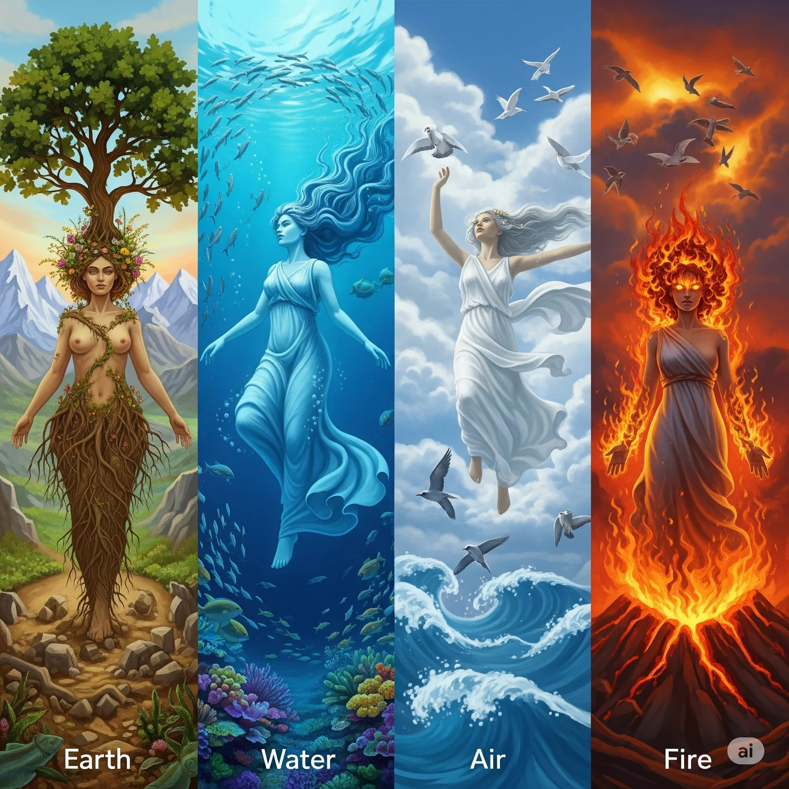
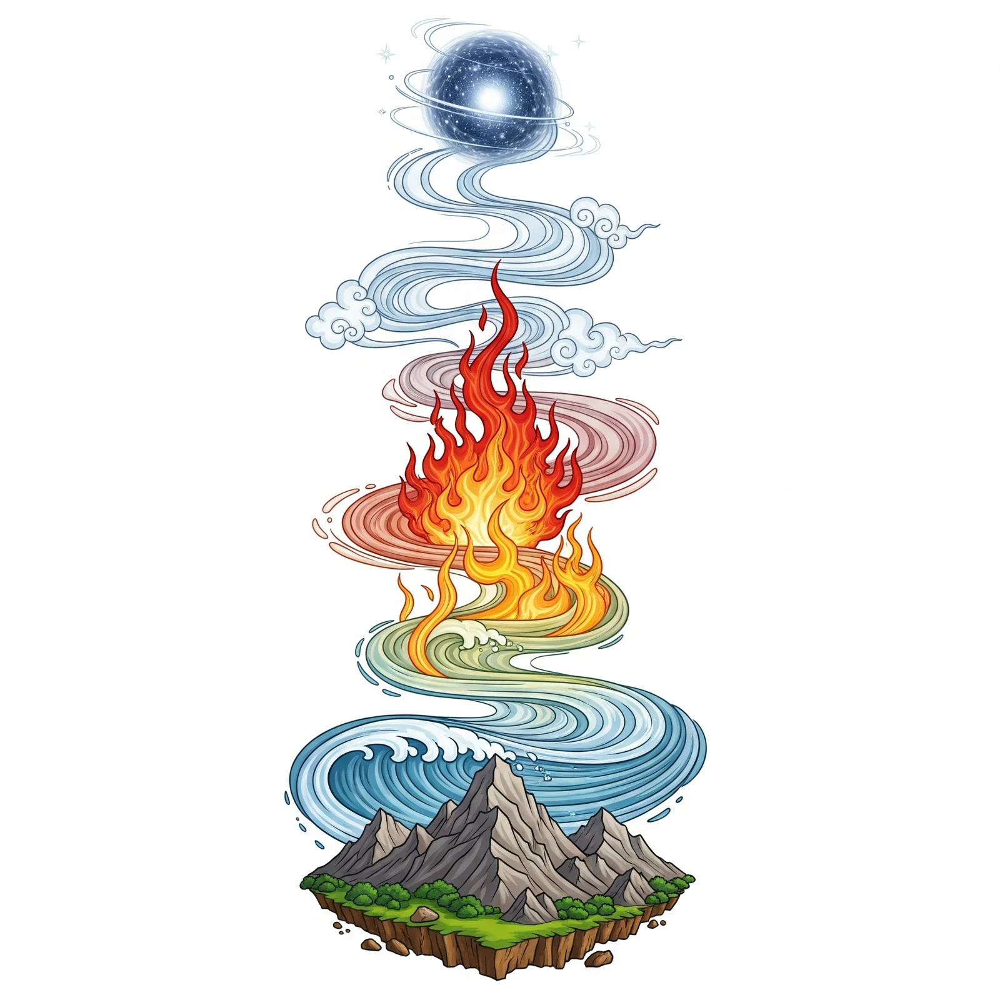
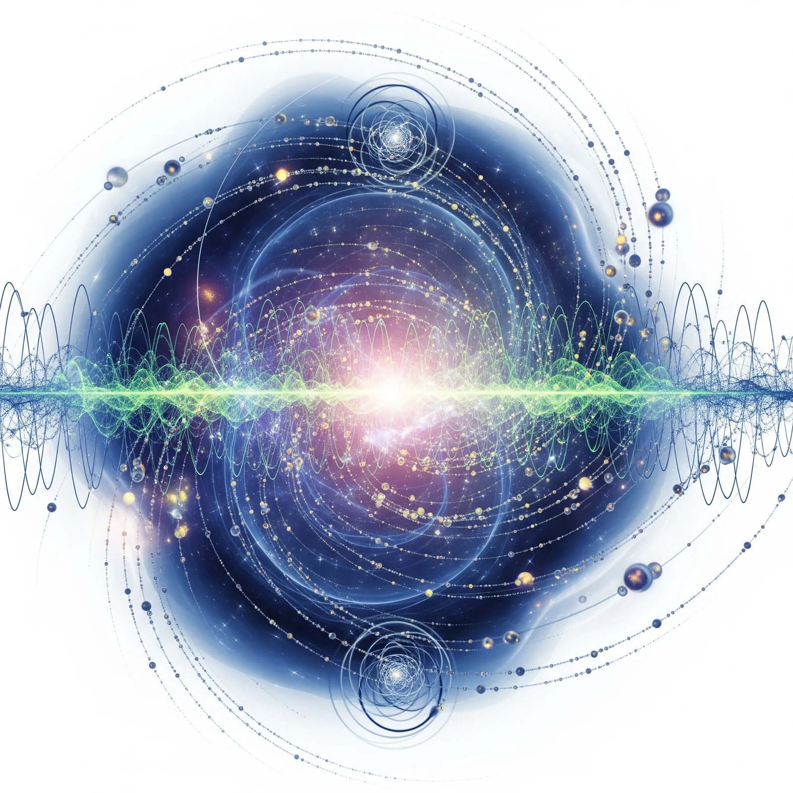

四大元素説は科学的には否定されましたが、人間の思考パターンや世界観を理解する上で重要な文化的遺産として今も研究されています。

五大思想は単なる物質論ではなく、精神性と物質性を統合した宇宙観として、現代でも瞑想や心身統合の実践において重要な意味を持ち続けています。
天地初発之時、於高天原成神名、
天之御中主神、次高御産巣日神、次神産巣日神
| 思想体系 | 根源 | 特徴 |
|---|---|---|
| ギリシャ | 四大元素 | 物質的構成要素 |
| 仏教 | 五大 | 物質と精神の統合 |
| 神道 | 神・{産霊 | むすひ} |
神道における世界の根源は、物質的要素ではなく「神という霊的エネルギー」「産霊という生命創造力」であり、これが日本独特の自然観や生命観の基盤となっています。
| 思想 | 根源概念 | 現代物理学との関連 |
|---|---|---|
| ギリシャ四大元素 | 火・空気・水・土 | プラズマ・気体・液体・固体の相 |
| 仏教五大 | 地・水・火・風・空 | 物質・エネルギー・空間・時間の統合 |
| 神道 | 神・{産霊 | むすひ} |
現代物理学は、世界の根源を 「量子場の励起状態としての粒子」 「情報とエネルギーの相互変換」 「観測者と被観測系の不可分性」 として理解します。これは古代の直観的洞察と驚くほど共鳴する側面を持ちつつ、実験的検証という新たな次元を加えた世界観といえます。
